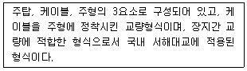
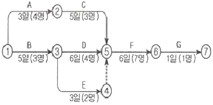
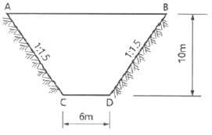
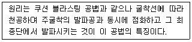
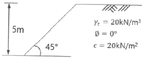
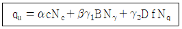
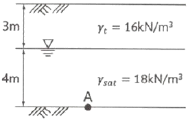
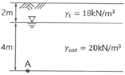
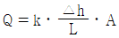

건설재료시험기사 (2020-06-06 기출문제)
1과목: 콘크리트공학
1. 프리스트레스트 콘크리트에 대한 설명으로 틀린 것은?
- 프리스트레싱할 때의 콘크리트 합축강도는 프리텐션 방식으로 시공할 경우 30MPa 이상이어야 한다.
- 프리스트레스트 그라우트에 사용하는 혼화제는 블리딩 발생이 없는 타입의 사용을 표준으로 한다.
- 서중 시공의 경우에는 지연제를 경함 감수제를 사용하여 크라우트 온도가 상승되거나 크라우트가 급결되지 않도록 하여야 한다.
- 굵은 골재의 최대 치수는 보통의 경우 40mm를 표준으로 한다. 그러나 부재치수, 철근간격, 펌프압송 등의 사정에 따라 25mm를 사용할 수도 있다.
(정답률: 67%)

2. 15회의 시험실적으로부터 구한 콘크리트 압축강도의 표준편차가 2.5MPa이고, 콘크리트의 설계기준압축강도가 30MPa인 경우 콘크리트의 배합강도는?
- 32.89MPa
- 33.26MPa
- 33.89MPa
- 34.26MPa
(정답률: 54%)
3. 콘크리트의 크리프에 영향을 미치는 요인에 대한 설명으로 틀린 것은?
- 온도가 높을수록 크리프는 증가한다.
- 조강시멘트는 보통시멘트보다 크리프가 작다.
- 단위 시멘트량이 많을수록 크리프는 감소한다.
- 물-시멘트비, 응력이 클수록 크리프는 증가한다.
(정답률: 62%)
4. 콘크리트의 작업성(workability)을 증진시키기 위한 방법으로서 적당하지 않은 것은?
- 입도나 입형이 좋은 골재를 사용한다.
- 혼화재료로서 AE제나 감수제를 사용한다.
- 일반적으로 콘크리트 반죽의 온도상승을 막아야 한다.
- 일정한 슬럼프의 범위에서 시멘트량을 줄인다.
(정답률: 68%)
5. 프리스트레스트 콘크리트 그라우트에 대한 설명으로 틀린 것은?
- 물-결합재비는 55%이하로 한다.
- 블리딩률은 0%를 표준으로 한다.
- 팽창률은 팽창성 그라우트에서는 0~10%를 표준으로 하여야 한다.
- 부재 콘크리트와 긴장재를 일체화시키는 부착강도는 재령 28일의 압축강도로 대신하여 설정할 수 있다.
(정답률: 64%)
6. 콘크리트 타설에 대한 설명으로 틀린 것은?
- 콘크리트를 2층 이상으로 나누어 타설할 경우, 상층의 콘크리트 타설을 원칙적으로 하층의 콘크리트가 굳기 시작하기 전에 해야 한다.
- 콘크리트 타설 도중 표면에 떠올라 고인블리딩수가 있을 경우에는 표면에 홈을 만들어 제거하여야 한다.
- 한 구회 내의 콘크리트는 타설이 완료될 때까지 연속해서 타설해야 한다.
- 콘크리트는 그 표면에 한 구획 내에서는 거의 수평이 되도록 타설하는 것을 원칙으로 한다.
(정답률: 78%)
7. 숏크리트 시공에 대한 주의사항으로 틀린 것은?
- 숏크리트 작업에서 반발량이 최소가 되도록하고, 리바운드된 재료는 즉시 혼합하여 사용하여야 한다.
- 숏크리트는 빠르게 운반하고, 급결제를 첨가한 후는 바로 뿜어붙이기 작업을 실시하여야 한다.
- 대기 온도가 10℃ 이상일 때 뿜어붙이기를 실시하며, 그 이하의 온도일 때는 적절한 온도대책을 세운 후 실시한다.
- 숏크리트는 뿜어붙인 콘크리트가 흘러내리지 않는 범위의 적당한 두께를 뿜어붙이고, 소정의 두께가 될 때까지 반복해서 뿜어붙여야 한다.
(정답률: 83%)
8. 압력법에 의한 굳지 않은 콘크리트의 공기량 시험(KS F 2421) 중 물을 붓고 시험하는 경우(주수법)의 공기량 측정기 용량은 최소 얼마 이상으로 하여야 하는가?
- 3L
- 5L
- 7L
- 9L
(정답률: 75%)
9. 일반콘크리트 비비기로부터 타설이 끝날때까지의 시간 한도로 옳은 것은?
- 외기온도에 상관없이 1.5시간을 넘어서는 안 된다.
- 외기온도에 상관없이 2시간을 넘어서는 안된다.
- 외기온도가 25℃ 이상일 때는 1.5시간, 25℃ 미만일 때에는 2시간을 넘어서는 안 된다.
- 외기온도가 25℃ 이상일 때에는 2시간, 25℃미만일 때에는 2.5시간을 넘어서는 안 된다.
(정답률: 72%)
10. 수중 콘크리트의 시공에서 주의해야 할 사항으로 틀린 것은?
- 콘크리트는 수중에 낙하시키지 않아야 한다.
- 물막이를 설치하여 물을 정지시킨 정수중에서 타설하는 것을 원칙으로 한다.
- 한 구획의 콘크리트 타설을 완료한 후 레이턴스를 제거하고 다시 타설하여야 한다.
- 완전히 물막이를 할 수 없어 콘크리트를 유수 중에 타설할 때 한계유속은 5m/s 이하로 하여야 한다.
(정답률: 74%)
11. 한중 콘크리트에 대한 설명으로 틀린 것은?
- 하루의 평균기온이 4℃이하가 예상되는 조건일 때는 한중 콘크리트로 시공하여야 한다.
- 재료를 가열할 경우, 물 또는 골재를 가열하는 것으로 하며, 시멘트는 어떠한 경우라도 직접 가열할 수 없다.
- 한중 콘크리트에는 공기연행 콘크리트를 사용하는 것을 원칙으로 한다.
- 타설할 때의 콘크리트 온도는 구조물의 단면치수, 기상조건 등을 고려하여 25~30℃의 범위에서 정하여야 한다.
(정답률: 50%)
12. 콘크리트 가지기에 대한 설명으로 틀린 것은?
- 내부진동기는 연직방향으로 일정한 간격으로 찔러 넣는다.
- 내부진동기를 하층의 콘크리트 속으로 0.1m정도 찔러 넣는다.
- 내부진동기는 콘크리트를 횡방향으로 이동시킬 목적으로 사용해서는 안된다.
- 콘크리트를 타설한 직후에는 절대 거푸집의 외측에 진동을 주어서는 안된다.
(정답률: 74%)
13. 고압증기양생한 콘크리트에 대한 설명으로 틀린 것은?
- 고압증기양생한 콘크리트는 어느 정도의 취성을 갖는다.
- 고압증기양생한 콘크리트는 보통양생한 것에 비해 백태현상이 감소된다.
- 고압증기양생한 콘크리트는 보통양생한 것에 비해 열팽창계수와 탄성계수가 매우 작다.
- 고압증기양생한 콘크리트는 황산염에 대한 저항성이 향상된다.
(정답률: 63%)
14. 유동화 콘크리트에 대한 설명으로 틀린 것은?
- 유동화 콘크리트의 슬럼프 값은 최대 210mm 이하로 한다.
- 유동화제는 질량 또는 용적으로 계량하고, 그 계량 오차는 1회에 1% 이내로 한다.
- 유동화 콘크리트의 슬럼프 증가량은 100mm 이하를 원칙으로 하며, 50~80mm를 표준으로 한다.
- 베이스 콘크리트 및 유동화 콘크리트의 슬럼프 및 공기량 시험은 50m3 마다 1회씩 실시하는 것을 표준으로 한다.
(정답률: 41%)
15. 콘크리트 성능서하 원인의 하나인 알칼리골재 반응에 대한 설명으로 틀린 것은?
- 알칼리골재 반응을 억제하기 위하여 단위시멘트량을 크게 하여야 한다.
- 알칼리골재 반응은 고로슬래그 미분말, 플라이애시 등의 포졸란 재료에 의해 억제된다.
- 알칼리골재 반응은 알칼리-실리카 반응-탄산염 반응, 알칼리-실리케이트 반응으로 분류한다.
- 알칼리골재 반응이 진행되면 무근콘크리트에서는 거북이등과 같은 균열이 진행된다.
(정답률: 73%)
16. 골재의 단위용적이 0.7m3인 콘크리트에서 잔골재율이 40%이고, 잔골재의 비중이 2.58이면 단위 잔골재량은 얼마인가?
- 710.6kg/m3
- 722.4kg/m3
- 745.2kg/m3
- 750.0kg/m3
(정답률: 67%)
17. 경량골재 콘크리트의 특징으로 틀린 것은?
- 강도가 작다.
- 흡수율이 작다.
- 탄성계수가 작다.
- 열전도율이 작다.
(정답률: 62%)
18. 콘크리트의 재료분리 현상을 줄이기 위한 사항으로 틀린 것은?
- 잔골재율을 증가시킨다.
- 물-시멘트비를 작게 한다.
- 포졸란을 적당량 혼합한다.
- 굵은 골재를 많이 사용한다.
(정답률: 68%)
19. 콘크리트 배합설계 시 굵은 최대치수의 선정방법으로 틀린 것은?
- 단면이 큰 구조물인 경우 40mm를 표준으로 한다.
- 일반적인 구조물의 경우 20mm 또는 25mm를 표준으로 한다.
- 거푸집 양 측면 사이의 최소 거리의 1/3을 초과해서는 안된다.
- 개별 철근, 다발철근, 긴장재 또는 최소 순간격의 3/4을 초과해서는 안된다.
(정답률: 67%)
20. 콘크리트의 받아들이기 품질검사에 대한 설명으로 틀린 것은?
- 콘크리트의 받아들이기 검사는 콘크리트가 타설된 이후에 실시하는 것을 원칙으로 한다.
- 굳지 않은 콘크리트의 상태는 외관 관찰에 의하여, 콘크리트 타설 개시 및 타설 중 수시로 검사하여야 한다.
- 바다 잔골재를 사용한 콘크리트의 염소이온량은 1일에 2회 시험하여야 한다.
- 강도검사는 콘크리트 배합검사를 실시하는 것을 표준으로 한다.
(정답률: 70%)
2과목: 건설시공 및 관리
21. 흙의 지지력 시험과 직접적인 관계가 없는 것은?
- 평판재하시험
- CBR시험
- 표준관입시험
- 정수위 투수시험
(정답률: 67%)
22. 교량의 구조에 따른 분류 중 아래에서 설명하는 교량 형식은?

- 사장교
- 현수교
- 아치교
- 트러스교
(정답률: 68%)
23. 37800m3(완성된 토량)의 성토를 하는데 유용토가 40000m3(느슨한 토량)이 있다. 이 때 부족한 토량은 본바닥 토량으로 얼마인가? (단, 흙의 종류는 사질토이고 토량의 변화율은 L=1.25, C=0.90이다.)
- 8000m3
- 9000m3
- 10000m3
- 11000m3
(정답률: 62%)
24. 유토곡선(Mass curve)의 성질에 대한 설명으로 틀린 것은?
- 유토곡선의 최댓값, 최솟값을 표시하는 점은 절토와 성토의 경계를 말한다.
- 유토곡선의 상승부분은 성토, 하강부분은 절토를 의미한다.
- 유토곡선이 기선아래에서 종결된 때에는 토량이 부족하고 기선위에서 종결된 때에는 토량이 남는다.
- 기선상에서의 토량은 “0”이다.
(정답률: 55%)
25. 폭우 시 옹벽 배면의 흙은 다량의 물을 함유하게 되는데 뒤채움 흙에 배수 시설이 불량할 경우 침투수가 옹벽에 미치는 영향에 대한 설명으로 틀린 것은?
- 수평 저항력의 증가
- 활동면에서의 양압력 증가
- 옹벽 저면에서의 양압력 증가
- 포화 또는 부분포화에 의한 흙의 무게 증가
(정답률: 65%)
26. 준설능력이 크고 대규모 공사에 적합하여 비교적 넓은 면적의 토질준설에 알맞고 선(船)형에 따라 경질토 준설도 가능한 준설선은?
- 그래브 준설선
- 디퍼 준설선
- 버킷 준설선
- 펌프 준설선
(정답률: 52%)
27. PERT와 CPM의 차이점에 대한 설명으로 틀린 것은?
- PERT의 주목적은 공기단축, CPM은 공사비 절감이다.
- PERT는 작업 중심의 일정게산이고, CPM은 결합점 중심의 일정계산이다.
- PERT는 3점 시간 추정이고, CPM은 1점 시간 추정이다.
- PERT는 이용은 신규사업, 비반복사업에 이용되고, CPM은 반복사업, 경험이 있는 사업에 이용된다.
(정답률: 55%)
28. 강말뚝의 부식에 대한 대책으로 적당하지 않은 것은?
- 초음파법
- 전기 방식법
- 도장에 의한 방법
- 말뚝의 두께를 증가시키는 방법
(정답률: 55%)
29. 암거의 배열방식 중 접수지거를 향하여 지형의 완만하고, 같은 습윤상태인 곳에 적합하며, 1개의 간선집수지를 또는 집수지거로 가능한 한 많은 흡수거를 합류하도록 배열하는 방식은?
- 자연식(Natural system)
- 차단식(Intercepting system)
- 빗식(Gridiron system)
- 집단식(Grouping system)
(정답률: 70%)
30. 보강도 옹벽의 뒤채움재료로 가장 적합한 흙은?
- 점토질흙
- 실트질흙
- 유기질흙
- 모래 섞인 자갈
(정답률: 65%)
31. 아래 그림과 같은 네트워크 공정표에서 전체 공기는?

- 12일
- 15일
- 18일
- 21일
(정답률: 66%)
32. 다음과 같은 절토 단면도에서 길이 30m에 대한 토량은?

- 5700m3
- 6030m3
- 6300m3
- 6600m3
(정답률: 58%)
33. 벤치 컷에서 벤치의 높이가 8m, 천공간격이 4m, 최소 저항선이 4m일 때 암석 굴착할 경우 장악량은? (단, 폭파계수(C)는 0.181이다.)
- 20.0kg
- 23.2kg
- 31.2kg
- 35.6kg
(정답률: 48%)
34. 딥퍼(dipper)용량이 0.8m3일 때 파워 셔블의 1일 작업량을 구하면? (단, 사이클 타임은 30초, 딥퍼 계수는 1.0, 흙의 토량 변화율(L)은 1.25, 작업효율은 0.6, 1일 운전시간은 8시간이다.)
- 286.64m3/day
- 324.52m3/day
- 368.64m3/day
- 452.50m3/day
(정답률: 52%)
35. 댐에 관한 일반적인 설명으로 틀린 것은?
- 흙댐(Earth dam)은 기초가 다소 불량해도 시공할 수 있다.
- 중력식 댐(Gravity dam)은 안전율이 가장 높고 대구성도 크나 설계이론이 복잡하다.
- 아치 댐(Arch dam)은 암반이 견고하고 계곡폭이 좁은 곳에 적합하다.
- 부벽식 댐(Butterss dam)은 구조가 복잡하여 시공이 곤란하고 강성이 부족한 단점이다.
(정답률: 55%)
36. 시멘트 콘크리트 포장에 대한 설명으로 틀린 것은?
- 내구성이 풍부하다.
- 재료구입이 용이하다.
- 부분적인 보수가 곤란하다.
- 양생기간이 짧고, 주행성이 좋다.
(정답률: 67%)
37. 15t 덤프트럭에 1.2m3의 버킷을 갖는 백호로 흙을 적재하고자 한다. 흙의 밀도가 1.7t/m3이고, 토량변화율 L=1.25이고, 버킷계수가 0.9일 때 트럭 1대당 백호 적재횟수는?
- 5회
- 8회
- 11회
- 14회
(정답률: 42%)
38. 아스팔트 콘크리트포장의 소성변형(rutting)에 대한 설명으로 틀린 것은?
- 아스팔트 콘크리트포장의 노면에서 차의 바퀴가 집중적으로 통과하는 위치에 생기는 도로연장 방향으로의 변형을 말한다.
- 하정기의 이상 고온 및 아스팔트량이 많은 경우 발생하기 쉽다.
- 침입도가 작은 아스팔트를 사용하거나 골재의 최대치수가 큰 경우 발생하기 쉽다.
- 변형이 발생한 위치에 물이 고일 경우 수막현상 등을 일으켜 주행 안전성에 심각한 영향을 줄 수 있다.
(정답률: 66%)
39. 다음에 설명하는 조절발파 공법의 명칭은?

- 벤치 컷
- 라인 드릴링
- 프리스플리팅
- 스무스 블라스팅
(정답률: 43%)
40. 공기케이슨 공법의 장점에 대한 설명으로 틀린 것은?
- 토층의 확인이 가능하다.
- 장애물 제거가 용이하다.
- 보일링 현상 및 히빙 현상의 방지로 인접구조물에 대한 피해가 없다.
- 소규모의 공사나 깊이가 얕은 경우에도 경제적이다.
(정답률: 55%)
3과목: 건설재료 및 시험
41. 포트랜드 시멘트의 주성분 비율 중 수경률(Hydraulic Modulus)에 대한 설명으로 틀린 것은?
- 수경률은 CaO성분이 많을 경우 커진다.
- 수경률은 다른 성분이 일정할 경우 석고량이 많을수록 커진다.
- 수경률이 크면 초기강도가 커진다.
- 수경률이 크면 수화열이 큰 시멘트가 생긴다.
(정답률: 50%)
42. 잔골재 A의 조립률이 2.5이고, 잔골재 B의 조립률이 2.9일 때, 이 잔골재 A와 B를 섞어 조립률 2.8의 잔골재를 만들려면 A와 B의 질량비를 얼마로 섞어야 하는가? (단, 질량비는 A:B로 나타낸다.)
- 1:1
- 1:2
- 1:3
- 1:4
(정답률: 58%)
43. 암석의 분류 중 성인(지질학적)에 의한 분류의 결과가 아닌 것은?
- 화성암
- 퇴적암
- 변성암
- 점토질암
(정답률: 64%)
44. 강의 열처리 방법 중에서 800~1000℃로 가열시킨 후 공기 중에서 서서히 냉각하여 강속의 조직이 치밀하게 되고 잔류응력이 제거되게 하는 방법은?
- 뜨임
- 풀림
- 불림
- 담금질
(정답률: 45%)
45. 콘크리트용 잔골재의 안전성에 대한 설명으로 옳은 것은?
- 잔골재의 안전성은 수산화나트륨으로 5회 시험으로 평가하며, 그 손실질량은 10%이하를 표준으로 한다.
- 잔골재의 안전성은 수산화나트륨으로 3회 시험으로 평가하며, 그 손실질량은 5%이하를 표준으로 한다.
- 잔골재의 안전성은 황산화나트륨으로 5회 시험으로 평가하며, 그 손실질량은 10%이하를 표준으로 한다.
- 잔골재의 안전성은 황산화나트륨으로 3회 시험으로 평가하며, 그 손실질량은 25%이하를 표준으로 한다.
(정답률: 60%)
46. 잔골재의 유해물 함유량 허용한도 중 점토덩어리인 경우 중량백분율로 최댓값은 얼마인가?
- 1%
- 2%
- 3%
- 4%
(정답률: 45%)
47. 아스팔트 시료를 일정비율 가열하여 강구의 무게에 의해 시료가 25mm 내려갔을 때 온도를 측정한다. 이는 무엇을 구하기 위한 시험인가?
- 침입도
- 인화도
- 연소점
- 연화점
(정답률: 63%)
48. 재료의 역학적 성질 중 재료를 두둘길 때 얇게 퍼지는 성질을 무엇이하 하는가?
- 인성
- 강성
- 전성
- 취성
(정답률: 60%)
49. 플라이애시를 사용한 콘크리트의 특성으로 옳은 것은?
- 작업성 저하
- 수화열 증가
- 단위수량 감소
- 건조수축 증가
(정답률: 50%)
50. 분말도가 큰 시멘트의 성질에 대한 설명으로 옳은 것은?
- 응결이 늦고 발열량이 많아진다.
- 초기 강도는 작으나 장기 강도의 증진이 크다.
- 물에 접촉하는 면적이 커서 수화작용이 늦다.
- 워커빌리티(workability)가 좋은 콘크리트를 얻을 수 있다.
(정답률: 54%)
51. 대폭파 또는 수중폭파에서 동시 폭파를 실시하기 위하여 뇌관 대신에 사용하는 것은?
- 도화선
- 도폭선
- 첨장약
- 공업용 뇌관
(정답률: 62%)
52. 콘크리트 내부에 미세한 크기의 독립기포를 형성하여 워커빌리티 및 동결융해에 대한 저항성을 높이기 위하여 사용하는 혼화제는?
- 고성능감수제
- 팽창제
- 발포제
- AE제
(정답률: 54%)
53. 토목섬유 중 폴리머를 판상으로 압축시키면서 격자모양의 형태로 구멍을 내어 만든 후 여러 가지 모양으로 늘린 것으로 연약지반 처리 및 지반 보강용으로 사용되는 것은?
- 웨빙(wbbing)
- 지오그리드(geogrid)
- 지오텍스타일(geotextile)
- 지오멤브레인(geomembrane)
(정답률: 60%)
54. 콘크리트용 혼화재료에 대한 설명으로 틀린 것은?
- 고로슬래그 시멘트를 사용한 콘크리트의 경우 목표 공기량을 얻기 위해서는 보통 콘크리트에 비하여 AE제의 사용량이 증가된다.
- 고로슬래그 미분말은 비결정질의 유리질 재료로 잠새수경성을 가지고 있으며, 유리화율이 높을수록 잠재수경성 반응은 커진다.
- 팽창재를 사용한 콘크리트의 팽창률 및 압축강도는 팽창재 혼입량이 증가할수록 계속 증가한다.
- 실리카 퓸은 입경이 1µm 이하, 평균입경은 0.1µm 정도의 초미립자로 이루어진 비결정질 재료로 시멘트 수화에서 생성되는 수산화 칼슘과 강력한 포졸란 반응을 한다.
(정답률: 49%)
55. 역청 재료의 성질 및 시험에 대한 설명으로 틀린 것은?
- 인화점은 연소점보다 30~60℃ 정도 높다.
- 일반적으로 가열속도가 빠르면 인화점은 떨어진다.
- 연화점 시험 시 시료를 환에 주입하고 4시간 이내에 시험을 종료한다.
- 연화점 시험 시 중탕 온도를 연화점이 80℃ 이하인 경우는 5℃로, 80℃ 초과인 경우는 32℃로 15분간 유지한다.
(정답률: 41%)
56. 아스팔트의 침입도 시험기를 사용하여 온도 25℃로 일정한 조건에서 100g의 표준 침이 3mm 관입했다면, 이 재료의 침입도는 얼마인가?
- 3
- 6
- 30
- 60
(정답률: 61%)
57. 부순 굵은 골재의 품질에 대한 설명으로 틀린 것은?
- 마모율은 30% 이하이어야 한다.
- 흡수율은 3% 이하이어야 한다.
- 입자 모양 판정 실적률 시험을 실시하여 그 값이 55% 이상이어야 한다.
- 0.08mm체 통과량은 1.0% 이하이어야 한다.
(정답률: 42%)
58. 포틀랜드 시멘트(KS L 5201)에서 1종인 보통 포틀랜드 시멘트의 비카 시험에 따른 초결 및 종결 시간에 대한 규정으로 옳은 것은?
- 초결:60분 이상, 종결:10시간 이하
- 초결:50분 이상, 종결:15시간 이하
- 초결:40분 이상, 종결:9시간 이하
- 초결:120분 이상, 종결:10시간 이하
(정답률: 57%)
59. 목재의 건조방법 중 인공건조법이 아닌 것은?
- 수침법
- 끓임법
- 증기법
- 열기법
(정답률: 65%)
60. 단위용적질량이 1.65kg/L인 굵은 골재의 절건밀도가 2.65kg/L일 때 이 골재의 공극률은 얼마인가?
- 28.6%
- 30.3%
- 33.3%
- 37.7%
(정답률: 51%)
4과목: 토질 및 기초
61. 성토나 기초지반에 있어 특히 점성토의 압밀완료 후 추가 성토 시 단기 안정문제를 검토하고자 하는 경우 적용되는 시험법은?
- 비압밀 비배수시험
- 압밀 비배수시험
- 압밀 배수시험
- 일축압축시험
(정답률: 42%)
62. 흙의 다짐에 대한 설명으로 틀린 것은?
- 최적함수비로 다질 때 흙의 건조밀도는 최대가 된다.
- 최대건조밀도는 점성토에 비해 사질토일수록 크다.
- 최적함수비는 점성토일수록 작다.
- 점성토일수록 다짐곡선은 완만하다.
(정답률: 41%)
63. 지표면에 설치된 2m×2m의 정사각형 기초에 100kN/m2의 등분포 하중이 작용하고 있을 때 5m 깊이에 있어서의 연직응력 증가향을 2:1 분포법으로 계산한 값은?
- 0.83kN/m2
- 8.16kN/m2
- 19.75kN/m2
- 28.57kN/m2
(정답률: 38%)
64. 점착력이 8kN/m2, 내부 마찰각이 30°, 단위중량 16N/m3인 흙이 있다. 이 흙에 인장균열은 약 몇 m 깊이까지 발생할 것인가?
- 6.92m
- 3.73m
- 1.73m
- 1.00m
(정답률: 40%)
65. 100% 포화된 흐트러지지 않은 시료의 부피가 20cm3이고 질량이 36g이었다. 이 시료를 건조로에서 건조시킨 후의 질량이 24g일 때 간극비는 얼마인가?
- 1.36
- 1.50
- 1.62
- 1.70
(정답률: 37%)
66. 어느 모래층의 간극률 35%, 비중이 2.66이다. 이 모래의 분사현상(Quick Sand)에 대한 한계동수경사는 얼마인가?
- 0.99
- 1.08
- 1.16
- 1.32
(정답률: 43%)
67. Paper drain설계 시 Drain paper의 폭이 10cm, 두께가 0.3cm일 때 Drain paper의 등치환산원의 직경이 약 얼마이면 Sand drain과 동등한 값으로 볼 수 있는가? (단, 형상계수는(a) 0.75이다.)
- 5cm
- 8cm
- 10cm
- 15cm
(정답률: 35%)
68. 그림과 같은 점토지반에서 안전수(m)가 0.1인 경우 높이 5m의 사면에 있어서 안전율은?

- 1.0
- 1.25
- 1.50
- 2.0
(정답률: 27%)
69. Terzaghi의 1차원 압밀이론에 대한 가정으로 틀린 것은?
- 흙은 균질하다.
- 흙은 완전 포화되어 있다.
- 압축과 흐름은 1차원적이다.
- 압밀이 진행되면 투수계수는 감소한다.
(정답률: 48%)
70. 사운딩(Sounding)의 종류에서 사질토에 가장 적합하고 점성토에서도 쓰이는 시험법은?
- 표준 관입 시험
- 베인 전단 시험
- 더치 콘 관입 시험
- 이스키미터(Iskymeter)
(정답률: 49%)
71. 얕은 기초에 대한 Terzaghi의 수정지지력 공식은 아래의 표와 같다. 4m×5m의 직사각형 기초를 사용할 경우 형상계수 α와 β의 값으로 옳은 것은?

- α=1.18, β=0.32
- α=1.24, β=0.42
- α=1.28, β=0.32
- α=1.32, β=0.38
(정답률: 34%)
72. 아래 그림과 같은 지반의 A점에서 전응력(σ), 간극수압(u), 유효응력(σ)을 구하면? (단, 물의 단위중량 9.81kN/m3이다.)

- σ=100kN/m2, u=9.8kN/m2, σ'=90.2kN/m2
- σ=100kN/m2, u=29.4kN/m2, σ'=70.6kN/m2
- σ=120kN/m2, u=19.6kN/m2, σ'=100.4kN/m2
- σ=120kN/m2, u=39.2kN/m2, σ'=80.8kN/m2
(정답률: 41%)
73. 말뚝 지지력에 관한 여러 가지 공식 중 정역학적 지지력 공식이 아닌 것은?
- Dorr의 공식
- Terzaghi의 공식
- Meyerhof의 공식
- Engineering news 공식
(정답률: 53%)
74. 그림에서 A점 흙의 강도정수가 c'=30kN/m2, Φ'=30°일 때, A점에서의 전단강도는? (단, 물의 단위중량은 9.81kN/m3이다.)

- 69.31kN/m2
- 74.32kN/m2
- 96.97kN/m2
- 103.92kN/m2
(정답률: 43%)
75. 평판 재하 실험에서 재하판의 크기에 의한 영향(scale effect)에 관한 설명으로 틀린 것은?
- 사질토 지반의 지지력은 재하판의 폭에 비례한다.
- 점토지반의 지지력은 재하판의 폭에 무관하다.
- 사질토 지반의 침하량은 재하판의 폭이 커지면 약간 커지기는 하지만 비레하는 정도는 아니다.
- 점토지반의 침하량은 재하판의 폭에 무관하다.
(정답률: 46%)
76. 흙의 투수성에서 사용되는 Darcy의 법칙 (

)에 대한 설명으로 틀린 것은?- △h는 수두차이다.
- 투수계수(k)의 차원은 속도의 차원(cm/s)과 같다.
- A는 실제로 물이 통하는 공극부분의 단면적이다.
- 물의 흐름이 난류인 경우에는 Darcy의 법칙이 성립하지 않는다.
(정답률: 40%)
77. 다음 중 일시적인 지반 개량 공법에 속하는 것은?
- 동결공법
- 프리로딩 공법
- 약액주입 공법
- 모래다짐말뚝 공법
(정답률: 48%)
78. 압밀시험결과 시간-침하량 곡선에서 구할 수 없는 값은?
- 초기 압축비
- 압밀계수
- 1차 압밀비
- 선행압밀 압력
(정답률: 42%)
79. 어떤 흙의 입경가적곡선에서 D10=0.⑤mm, D30=0.09mm, D60=0.15mm이었다. 균등계수(Cu)와 곡률계수(Cg)의 값은?
- 균등계수=1.7, 곡률계수=2.45
- 균등계수=2.4, 곡률계수=1.82
- 균등계수=3.0, 곡률계수=1.08
- 균등계수=3.5, 곡률계수=2.08
(정답률: 40%)
80. 외경이 50.8mm, 내경이 34.9mm인 스필릿 스푼 샘플러의 면적비는?
- 112%
- 106%
- 53%
- 46%
(정답률: 37%)